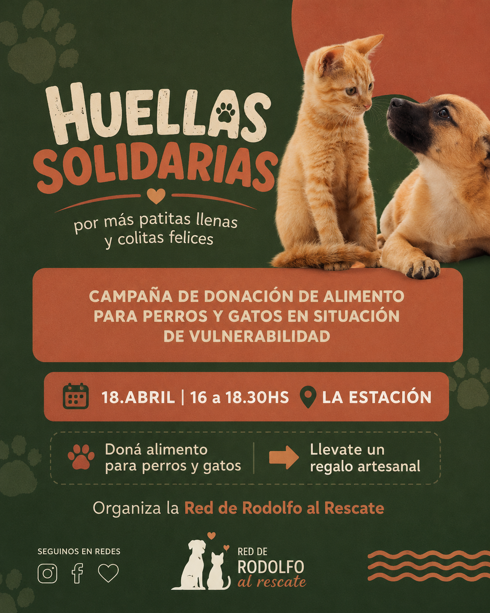

Nuestros programas
Un nuevo hogar
Nuestro programa principal está enfocado en dar un cierre feliz a las historias de abandono mediante la adopción responsable. No nos limitamos a entregar un animal al primer interesado; realizamos un proceso meticuloso de vinculación que incluye entrevistas profundas a las familias, análisis del entorno hogareño y la firma de un contrato de compromiso mutuo. Queremos asegurarnos de que tanto el animal como sus nuevos tutores se adapten perfectamente el uno al otro.
Creemos firmemente que cada perro y gato tiene una personalidad única y requiere un entorno que respete sus tiempos y necesidades específicas. Todos los animales que forman parte de este programa se entregan con su esquema de vacunación al día, desparasitados y castrados si tienen la edad adecuada. Además, nuestro equipo de comportamiento animal brinda talleres obligatorios de tenencia responsable para los adoptantes antes de concretar la llegada del nuevo integrante.
El trabajo no termina el día de la adopción. Realizamos un seguimiento periódico post-adopción durante los primeros seis meses para brindar soporte continuo en temas de conducta, alimentación y adaptación con otras mascotas. Este acompañamiento constante ha reducido a cero los casos de devolución, garantizando que cada animal rescatado tenga verdaderamente un hogar definitivo lleno de estabilidad y cariño.

Rescate y recuperación
Este programa representa la primera línea de acción de nuestra fundación y el núcleo operativo de nuestro voluntariado. Atendemos reportes diarios de animales en situaciones de vulnerabilidad extrema, incluyendo casos de abandono en la vía pública, maltrato severo, desnutrición avanzada y animales heridos en accidentes de tránsito. Nuestro equipo de emergencia se desplaza de inmediato para realizar la contención segura del animal.
Una vez rescatados, los trasladamos de urgencia a clínicas veterinarias aliadas donde se les realizan diagnósticos complejos, análisis de sangre, radiografías y las cirugías que hagan falta para salvar sus vidas. Tras recibir el alta médica ambulatoria, los animales no van a un canil, sino que ingresan directamente a nuestra red de hogares de tránsito solidarios, donde reciben medicación diaria y curaciones específicas.
La recuperación más difícil suele ser la emocional. En los hogares de tránsito, rodeados de paciencia, rutinas claras y mucho amor, los animales aprenden a dejar atrás los traumas del maltrato y el miedo a los humanos. Monitoreamos su evolución física y psicológica semana a semana hasta que los profesionales determinan que el rescatado está listo y fuerte para ser publicado en las carteleras de búsqueda de adoptantes.

Campañas solidarias
Para erradicar el problema del abandono y el sufrimiento animal desde la raíz, desarrollamos un programa continuo enfocado en la prevención, la educación comunitaria y el apoyo a los sectores más vulnerables. Organizamos jornadas informativas en escuelas y centros vecinales sobre los beneficios de la castración temprana como único método ético y eficaz para controlar la sobrepoblación y evitar enfermedades graves.
Asimismo, coordinamos de forma mensual campañas masivas de recolección de insumos esenciales. Recaudamos alimento balanceado de calidad, mantas para afrontar el invierno, caniles para traslados y medicamentos de uso veterinario recurrente. Todo lo recaudado se distribuye de manera transparente entre los hogares de tránsito que sostienen a nuestros rescatados y refugiados temporales de familias en emergencias socioeconómicas.
Dado que los costos veterinarios de alta complejidad son sumamente elevados, impulsamos eventos benéficos, rifas virtuales, ferias de garaje y campañas de padrinazgo digital. Estas acciones nos permiten recaudar los fondos necesarios para saldar las deudas en las clínicas y asegurar los insumos del mes siguiente, logrando involucrar de forma activa a toda la comunidad en la construcción de un entorno más empático.

Nuestro impacto
1000
Animales rescatados
700
Adopciones exitosas
500
Voluntarios
50
Campañas realizadas
🐾 ¿Querés formar parte del cambio?
Cada rescate comienza con una persona dispuesta a ayudar. Sumate como voluntario, colaborá con una donación o brindale un hogar a un animal que lo necesita.
❤️ Quiero ayudarSeguinos en nuestras redes sociales
En nuestras redes sociales compartimos historias de nuestros amigos rescatados, consejos para el cuidado de los animales, información sobre nuestros programas, campañas y formas de involucrarse como voluntario o donante.